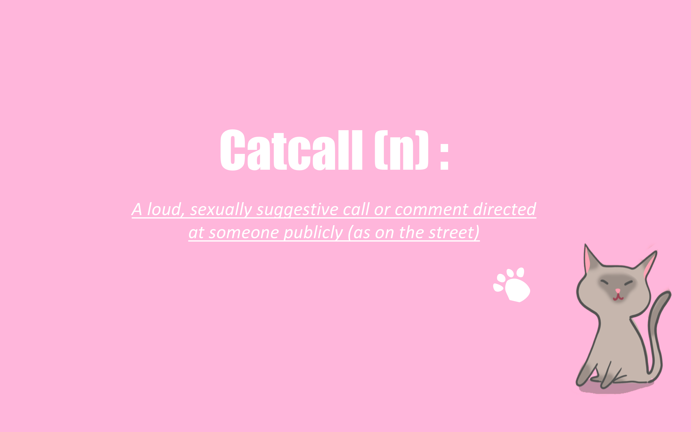
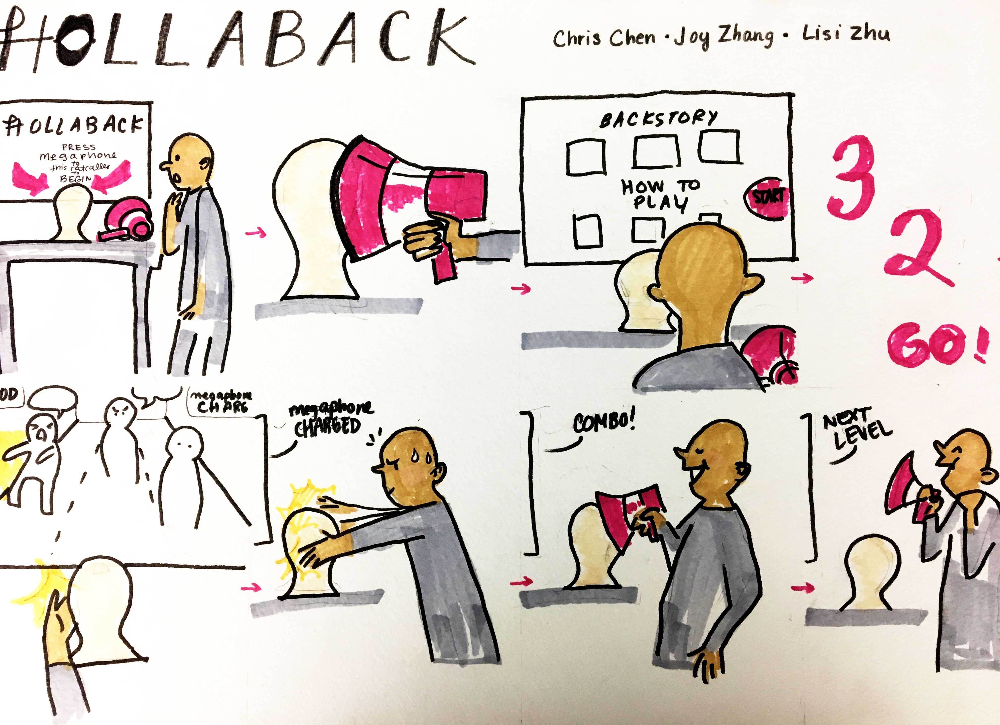
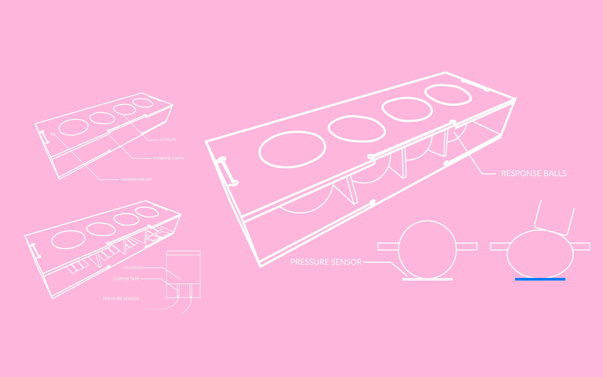
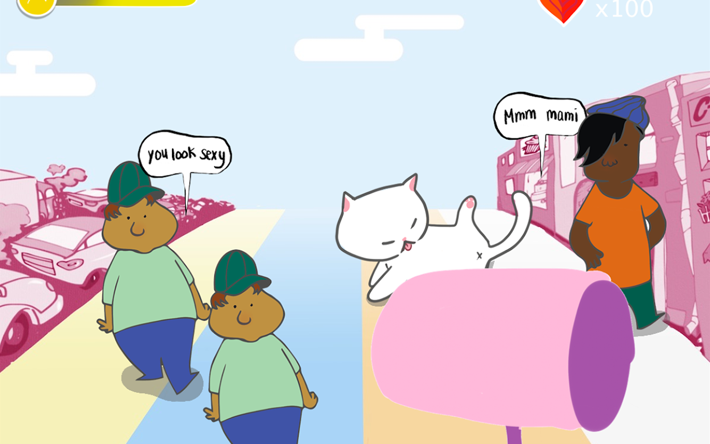

We wanted to weave strong storytelling into our game to create empathy and education about the harmful nature of catcalling while also emphasizing fun and interactivity.
We encountered challenges in tempering tone with the game interaction - we navigated this by creating an over-exaggerated aesthetic and interactions.


We ideated through a variety of interaction concepts, going from bodystorming, to storyboards, to product schematics, and then finally a working prototype.
Our whack-a-mole style game is fully play-able, built through Processing and Arduino, features 3 different levels, a story, and a custom built controller.


After user testing, my main insight was to focus on causes that strongly resonated with a community - not necessarily the biggest or most important, but reveal a whole new world and mean everything for them. That’s where real change begins.